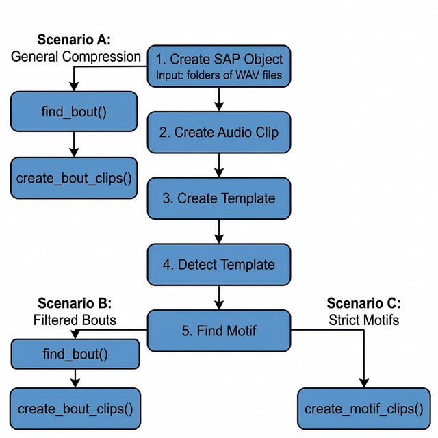

Introduction
Song recordings from a single zebra finch can easily span several
months and accumulate hundreds of gigabytes of audio. The vast majority
of that data is silence, cage noise, or irrelevant vocalizations. ASAP
provides two complementary export functions —
create_bout_clips() and create_motif_clips() —
that read your detection results and write only the audio segments you
actually need.
This vignette walks through:
- Which export scenario to use — bout compression, filtered bouts, or tight motif clips
- Which output format to choose — WAV or HDF5, and why
- How to tune key arguments — amplitude normalization, balanced sampling, and clip naming
Prerequisites: Before reading this vignette, we recommend completing:
Overview: How the Export Step Fits in the Pipeline
The export functions sit at the end of the ASAP longitudinal pipeline. The diagram below shows where each export function connects to the upstream detection steps.
Starting from a SAP object (Step 1), you can branch off in three directions depending on how much pre-processing you want to do before exporting:
-
Scenario A — branch immediately after Step 1: run
find_bout()withsegment_type = "raw"and export bouts. No motif detection needed. This is the fastest path for bulk storage compression. -
Scenario B — run the full motif detection pipeline
(Steps 2–5), then
find_bout()withsegment_type = "motifs". This filters out any bouts that don’t contain a detected motif, leaving only clean song bouts. - Scenario C — run the full motif detection pipeline (Steps 2–5), then export motifs directly. This produces the tightest possible clips and is ideal for acoustic feature analysis.

ASAP song clip export scenarios. Scenario A branches early (after SAP object creation) for rapid compression. Scenarios B and C require full motif detection before exporting bouts or motifs, respectively.
Setup
This sap object was created in the Longitudinal Motif
Detection vignette and already includes the five steps shown in the
above overview flowchart.
Processing Scenarios
Depending on your downstream analysis, you may want to export long bouts that contain a mixture of vocalizations, filtered bouts that only contain learned song, or tightly cropped individual motifs.
Here are the three primary export scenarios supported by ASAP:
Scenario A: General Compression
Workflow: create_sap_object() ->
find_bout(segment_type = "raw") ->
create_bout_clips()
If you simply want to remove hours of silence from your recordings
and don’t care about isolating learned song yet, you can detect bouts
purely based on amplitude right after creating your SAP object — no
motif detection required. Pass segment_type = "raw" to tell
find_bout() to scan all audio files from the SAP metadata
directly, without any motif validation step.
- Pros: Preserves all potentially useful recordings (innate calls, unstereotyped vocal elements). Drastically reduces storage size.
- Cons: The exported clips will still contain background cage noise and non-song vocalizations.
sap <- sap |>
find_bout(
segment_type = "raw", # scan all files; no motifs needed
min_duration = 0.5
) |>
create_bout_clips(
output_dir = "compressed_bouts",
output_format = "wav",
keep_source_file_name = TRUE
)Scenario B: Filtered Bouts
Workflow: find_motif() ->
find_bout() -> create_bout_clips()
If you want to study the broader syntactic structure of song (e.g.,
how motifs are grouped together) but want to exclude general cage noise
and innate calls, you should run find_motif()
before find_bout(). When motif data is present,
find_bout() will automatically filter out any amplitude
bouts that do not contain a recognized motif.
- Pros: Excludes background noise and innate vocalizations. Leaves you with clean, multi-motif song bouts.
- Cons: May miss very poor early-stage practice song if your motif template is too strict.
sap <- sap |>
find_motif(template_name = "syllable_d") |>
find_bout(
segment_type = "motifs" # only keep bouts that contain a motif
) |>
create_bout_clips(
output_dir = "filtered_bouts",
output_format = "wav"
)For full pipeline context, see Longitudinal Bout Detection.
Scenario C: Strict Motifs
Workflow: find_motif() ->
create_motif_clips()
If you are only interested in analyzing the core learned vocalization (the individual motif) and want to strip away inter-motif gaps, introductory notes, and calls entirely, you should export motifs directly.
- Pros: Perfect for tight acoustic feature extraction, spectrogram clustering, and UMAPs.
- Cons: Loses syntactic sequence context (rhythm and pacing between motifs).
sap <- sap |>
find_motif(template_name = "syllable_d") |>
create_motif_clips(
output_dir = "strict_motifs",
output_format = "wav"
)For full pipeline context, see Longitudinal Motif Detection.
Real-World Example: Scenario B
This section demonstrates Scenario B on a publicly available zebra finch dataset to show what the full pipeline looks like in practice.
Dataset
The sil469 dataset is a longitudinal recording collection from a single juvenile male zebra finch, available through the Duke University Research Data Repository:
sil469_raw_wav.zip (~10 GB) — 33,159 raw
.wavfiles across 26 daily subfolders (72–97 dph), ~14 GB unzipped. DOI: 10.7924/r4j38x43h
Full Pipeline
After downloading and unzipping the dataset, the Scenario B pipeline runs as follows:
library(ASAP)
data_dir <- "/path/to/sil469_raw_wav"
all_days <- as.character(72:97)
# Step 1 – Build SAP object from all 26 daily subfolders
sap <- create_sap_object(
base_path = data_dir,
subfolders_to_include = all_days,
labels = all_days
)
# Steps 2–5 – Build template, detect motifs, and find bouts
sap <- sap |>
create_audio_clip(
indices = c(20365, 33119),
start_time = c(1, 2.5),
end_time = c(3.7, 4.2),
clip_names = c("m_85", "m_97")
) |>
create_template(
template_name = "b",
clip_name = "m_85",
start_time = 1.32,
end_time = 1.45,
freq_min = 1,
freq_max = 8,
threshold = 0.5,
write_template = TRUE
) |>
detect_template(
template_name = "b",
proximity_window = 0.4,
threshold = 0.5
) |>
find_motif(
template_name = "b",
pre_time = 0.2,
lag_time = 0.3
) |>
# Step 6-7 – Find and export clips of bouts that contain at least one motif
find_bout(
min_duration = 0.4,
summary = TRUE
) |>
create_bout_clips(
output_format = "wav",
output_dir = data_dir,
keep_source_file_name = TRUE,
metadata_filename = "sil469_metadata_bouts.csv"
)Console Output
When create_bout_clips() completes, it prints a per-day
export summary:
Day 72: 402 written / 402 total (skipped: 0 missing, 0 invalid, 0 existing)
Day 73: 1241 written / 1241 total (skipped: 0 missing, 0 invalid, 0 existing)
Day 74: 1115 written / 1115 total (skipped: 0 missing, 0 invalid, 0 existing)
Day 75: 1110 written / 1110 total (skipped: 0 missing, 0 invalid, 0 existing)
Day 76: 1229 written / 1229 total (skipped: 0 missing, 0 invalid, 0 existing)
Day 77: 1316 written / 1316 total (skipped: 0 missing, 0 invalid, 0 existing)
Day 78: 1329 written / 1329 total (skipped: 0 missing, 0 invalid, 0 existing)
Day 79: 839 written / 839 total (skipped: 0 missing, 0 invalid, 0 existing)
Day 80: 895 written / 895 total (skipped: 0 missing, 0 invalid, 0 existing)
Day 81: 1013 written / 1013 total (skipped: 0 missing, 0 invalid, 0 existing)
Day 82: 899 written / 899 total (skipped: 0 missing, 0 invalid, 0 existing)
Day 83: 787 written / 787 total (skipped: 0 missing, 0 invalid, 0 existing)
Day 84: 945 written / 945 total (skipped: 0 missing, 0 invalid, 0 existing)
Day 85: 865 written / 865 total (skipped: 0 missing, 0 invalid, 0 existing)
Day 86: 840 written / 840 total (skipped: 0 missing, 0 invalid, 0 existing)
Day 87: 506 written / 506 total (skipped: 0 missing, 0 invalid, 0 existing)
Day 88: 784 written / 784 total (skipped: 0 missing, 0 invalid, 0 existing)
Day 89: 795 written / 795 total (skipped: 0 missing, 0 invalid, 0 existing)
Day 90: 1051 written / 1051 total (skipped: 0 missing, 0 invalid, 0 existing)
Day 91: 933 written / 933 total (skipped: 0 missing, 0 invalid, 0 existing)
Day 92: 80 written / 80 total (skipped: 0 missing, 0 invalid, 0 existing)
Day 93: 1053 written / 1053 total (skipped: 0 missing, 0 invalid, 0 existing)
Day 94: 662 written / 662 total (skipped: 0 missing, 0 invalid, 0 existing)
Day 95: 920 written / 920 total (skipped: 0 missing, 0 invalid, 0 existing)
Day 96: 1027 written / 1027 total (skipped: 0 missing, 0 invalid, 0 existing)
Day 97: 191 written / 191 total (skipped: 0 missing, 0 invalid, 0 existing)
Exported 22,827 clips to wav format (no normalization)Result
| Metric | Value |
|---|---|
| Raw audio files | 33,159 .wav files |
| Raw storage | ~14 GB |
| Exported bout clips | 22,827 clips |
| Curated storage | ~3 GB |
| Storage reduction | ~80% |
| Pipeline runtime | ~2 min/day on a standard laptop |
The full pipeline — from raw SAP recordings to curated, motif-validated bout clips — runs in approximately 2 minutes per day on a standard laptop, reducing storage by ~80% while retaining only biologically relevant vocalizations.
Output Formats: WAV vs. HDF5
You can export clips in two formats using the
output_format argument: "wav" or
"hdf5".
1. WAV Output (output_format = "wav")
Creates a standard directory tree:
output_dir/{type}/{bird_id}/{day_post_hatch}/{prefix}_xxx.wav.
When to use WAV: * You want to manually listen to the files or inspect them in Praat/Audacity. * You are sharing the data with collaborators who rely on standard audio software.
A companion metadata.csv is automatically generated in
the out folder to map each file to its exact source and original
timestamp.
2. HDF5 Output (output_format = "hdf5")
Compiles all audio data directly into a single, hierarchical matrix
file (.h5).
When to use HDF5: * Machine
Learning: Perfect for training PyTorch/TensorFlow models. Data
loaders can stream directly from a single chunked binary file much
faster than opening thousands of tiny .wav files. *
Large-scale Datasets: Prevents file system exhaustion
(inodes) when exporting tens of thousands of motifs on compute
clusters.
sap <- create_motif_clips(
sap,
output_format = "hdf5",
output_dir = "ml_dataset",
hdf5_filename = "training_motifs.h5"
)Building a Multi-Bird Master Database
Creating an HDF5 export directly from ASAP is convenient when working with a single bird. However, if you are building a large Master Database spanning multiple animals, I recommend a WAV-first strategy:
-
Export as WAV: Use
output_format = "wav"to save all clips and a consolidatedmetadata.csvfor each bird. -
Combine in Python: Use Python (
h5pyandpandas) to assemble the WAV files into your final HDF5 database.
Why? * Speed: R writes thousands of individual WAV files significantly faster than it handles serialized, chunked HDF5 attributes. * Traceability and Safety: WAV files sit natively on your hard drive, allowing you to inspect, listen, or delete bad clips visually before finalizing the machine learning dataset. If an export crashes midway, your WAV files are perfectly safe, whereas an incomplete HDF5 file becomes corrupted.
Because machine learning models are typically trained in PyTorch or
TensorFlow, you can easily load the raw WAVs directly via
torchaudio, or use a quick Python script to compile the
finalized clips into a master HDF5 file right before training.
Key Arguments
Both create_bout_clips() and
create_motif_clips() share a rich set of arguments to give
you precise control over exactly what gets exported.
| Argument | Purpose | Notes |
|---|---|---|
output_format |
Choose "wav" or "hdf5" output |
WAV for manual inspection; HDF5 for large-scale ML |
output_dir |
Root export directory | Required for both formats |
amp_normalize |
Normalize exported audio |
"none", "peak", or "rms"
|
n_bouts / n_motifs
|
Balanced sampling per day | Sample up to N clips per day_post_hatch
|
seed |
Reproducible sampling | Use 222 for deterministic results |
hdf5_filename |
HDF5 file name | Only used when output_format = "hdf5"
|
keep_source_file_name |
Keep original file stems | Useful for traceability in WAV export |
Amplitude Normalization (amp_normalize)
When exporting clips from longitudinal data, the distance of the bird to the microphone can vary drastically across days. ASAP allows you to normalize the volume of exported clips on the fly.
-
"none"(Default): Leaves the audio exactly as it was in the raw recording. Best if absolute amplitude is biologically relevant to your study. -
"peak": Scales the audio so the loudest peak hits the maximum allowed digital value without clipping. Good for standardizing general listening volume. -
"rms": Normalizes the audio to a standard root-mean-square (RMS) energy level. Strongly recommended for machine learning models, as it guarantees a consistent baseline volume across all developmental stages regardless of microphone placement.
sap <- create_motif_clips(
sap,
output_format = "wav",
output_dir = "rms_normalized",
amp_normalize = "rms"
)Standardized Sampling (n_bouts /
n_motifs)
When analyzing thousands of clips, some days may have 2,000 motifs/bouts while others have only 50. If you export everything, downstream statistical models will be heavily biased toward the highly vocal days.
Using n_motifs = N or n_bouts = N instructs
ASAP to randomly sample up to N clips per day
(the day_post_hatch variable).
# Get exactly 50 motif clips per day for balanced longitudinal models
sap <- create_motif_clips(
sap,
output_format = "wav",
output_dir = "balanced_dataset",
n_motifs = 50,
seed = 222 # Sets random seed for reproducible sampling
)Clip Naming (name_prefix and
keep_source_file_name)
By default, exported clips are named with a sequential index that restarts for each bird/day combination:
# Default naming: {prefix}_{index}.wav
bout_001.wav, bout_002.wav, ... # create_bout_clips default
motif_001.wav, motif_002.wav, ... # create_motif_clips defaultYou can customize the prefix with name_prefix:
# Custom prefix
create_bout_clips(sap, name_prefix = "trial2", output_dir = "out", output_format = "wav")
# → trial2_001.wav, trial2_002.wav, ...If you need to trace each clip back to its exact source
recording — which is especially important in Scenario A where
you have no motifs to anchor provenance — set
keep_source_file_name = TRUE. This replaces the sequential
counter with the source WAV filename stem combined with the
selec index (for bouts) or a per-file sequential index (for
motifs):
# Scenario A: keep the origin WAV name in every exported clip filename
sap <- sap |>
find_bout(segment_type = "raw", min_duration = 0.5) |>
create_bout_clips(
output_dir = "compressed_bouts",
output_format = "wav",
keep_source_file_name = TRUE
)
# → S237_42685.4209366_11_11_1_10_9_001.wav
# → S237_42685.7215374_11_11_2_00_15_001.wav
# → ... (each clip name encodes its source recording)Note:
keep_source_file_name = TRUEoverridesname_prefix. If both are set,keep_source_file_nametakes precedence andname_prefixis ignored.
| Scenario | name_prefix |
keep_source_file_name |
Resulting filename |
|---|---|---|---|
| Default |
NULL (→ "bout" or
"motif") |
FALSE |
bout_001.wav |
| Custom prefix | "treatment_A" |
FALSE |
treatment_A_001.wav |
| Source tracing | any or NULL
|
TRUE |
S237_42685.42_001.wav |